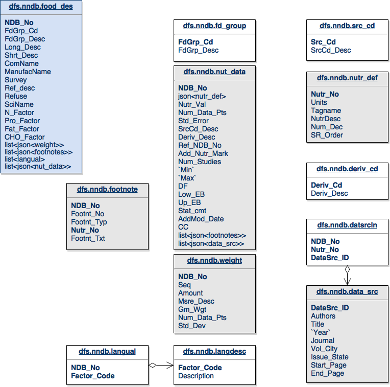
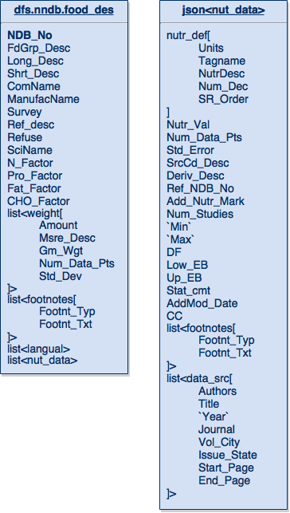

The Evolution of Database Schemas using SQL + NoSQL
Traditional Database Design
For the last 30 years software applications have leveraged RDBMS for persisting their data. It has been this way for a while because RDBMS is generally supported by IT organizations, which makes it that much easier to get software into a production environment. Typically engineers create data structures in the programming language they are utilizing and then figure out how to map those data structures to a series of database tables. Within the world of Java there have been many different “solutions” for persistence. The most recent have been the Java Persistence API and Hibernate. These were meant to deliver an abstraction from the underlying database technology to offer some level of portability. The main problem is that the portability was really only from one RDBMS to another. The secondary problem is that creating those mappings was not an easy task, and it required a lot of work to test that they were working as intended.
It seems like it would make a lot more sense to persist the entire data structure as is. This would make it truly portable, as well as easier to develop and test. Let us not forget that it would also make it a lot easier to query the data. It is kind of a nightmare to write SQL queries against complicated database schemas. Not only can SQL queries against large schemas be difficult to write, but they also present a barrier for people researching data stored within those complicated database schemas. Researchers have to figure out which columns in which tables mean what within the confines of the questions for which they seek answers. Things could be easier for everyone involved, at every stage of the process.
Time to Evolve
Let’s revisit the database schema for the National Nutrient Database:
USDA NNDB SR27 - Standard
Starting at the top of this schema we can see that the fd_group table is nothing more than a detail table that yields a maximum of one record per entry in the food_des table. We also see these same relationships with the src_cd, nutr_def, and deriv_cd onto the nut_data table.
The nut_data, footnote and weight tables each can have zero or more entries per item in the food_des table, and yield, what I like to call, lists. The datsrcln table is nothing more than a join table from nut_data to data_src, and the same goes for the langual table to the langdesc table. Both generate nothing more than lists of data.
This table structure is built the way it is in order to support the concepts of lists of either simple or complex data. The benefit that previously existed from this type of table schema was that it saved money on disk storage. Storage costs are now thousands of times less than they were 10 to 30 years ago, so today we would not be saving any real money on storage.
Let’s start simplifying the database schema to see if we can make it better for all parties involved:

USDA NNDB SR27 - Simplified v1
Take a look at the changes in the food_des table. The FdGrp_Desc from the fd_group table has been merged into the food_des table. The weight table gets merged into the food_des table as lists. This is a list because there could be zero or more elements in the tables relating to the food_des table. We can distill the langual and langdesc table down to a list of “descriptions” from the langdesc table and store them in the food_des table. The nut_data table can become a list of elements in the food_des table.
We can then take the src_cd, nutr_def and deriv_cd and just merge them directly into the nut_data table structure. The datasrcln table is a join table for data_src back to nut_data so we just merge that back as a list of elements as well.
The more interesting case here is that after inspecting the footnote table from the original schema, it seems that the relationship between footnote and nut_data was not written properly. The arrow should probably point in the opposite direction. The footnote table contains two types of footnotes. It contains footnotes related to the food_des via the ndb_no, but it also relates to the nut_data via a combination of ndb_no and nutr_no. To support this in the new schema, we will break up the footnote table and create a list of footnotes in nut_data and food_des.
The tables that are now gray are JSON formatted data structures within another table. The white tables are basically just merged into their parent tables, either directly or as a list.
By “wasting” a little bit of space (compared to the standard design), we now end up with a table of data that is capable of being understood by anyone. Here is a simpler view of this data schema:

USDA NNDB SR27 - Simplified v2
The table on the left is the food_des table and the table on the right is just the JSON data structure that formerly encompassed the nutrition data (nut_data). As you look through this, you will notice that it contains all the fields that were originally defined in the tables, minus some of the fields that are no longer relevant like sequence numbers or factor codes, or any other field that was just being used to create a relationship between tables.
Here is a data extract of some data from the original database and in this JSON structure for you to test with. This data comprises one food_des record (I manually added a langual entry which did not exist in the original database for this record). Copy this data and put it into a file /tmp/food_des.json and you will be able to run the rest of the queries on your own.
Apache Drill was built to be able to query complex data structures like the table presented above. We can start with one of the simplest use cases, which is the list<langual> that is in the table. That list is a common way of describing the food_des item. In order to find the common language information for a single item in the original schema, we would have to run this query:
SELECT fd.NDB_No, ld.Description FROM dfs.nndb.food_des fd
LEFT JOIN dfs.nndb.langual lf ON (fd.NDB_No=lf.NDB_No)
LEFT JOIN dfs.nndb.langdesc ld ON (lf.FACTOR_CODE=ld.FACTOR_CODE)
where fd.NDB_No=02001;
This is the query in the new schema, which utilizes the FLATTEN function within Drill:
SELECT NDB_No, FLATTEN(langual) FROM
dfs.tmp.`food_des.json` fd where fd.NDB_No=08613;
Both of those queries return one row for each description in the langual list. The second query is much easier to understand and to write. This translates directly into time savings for anyone wanting to perform research, as they will have a much easier time working with the data.
Let’s look at a query that is considerably more complex. We are going to select some fields from multiple tables to find out details about a food item and the source of those details. This query is not all inclusive of all the details that could be pulled in and is limited to three nutr_no records:
SELECT fd.ndb_no, fd.shrt_desc, nd.nutr_no, nd.nutr_val, ndd.num_dec, ndd.tagname, ndd.nutrdesc, ds.authors, ds.title, ds.`year`
FROM dfs.nndb.food_des fd, dfs.nndb.nut_data nd, dfs.nndb.nutr_def ndd, dfs.nndb.datsrcln dsl, dfs.nndb.data_src ds
WHERE fd.NDB_No=nd.NDB_No
AND nd.Nutr_No=ndd.Nutr_No
AND nd.NDB_No=dsl.NDB_No
AND nd.nutr_no=dsl.Nutr_No
AND dsl.DataSrc_ID=ds.DataSrc_ID
AND fd.NDB_No=08613
AND nd.nutr_no IN (203,204,205);
Here is what the same query would like against the new schema:
SELECT fd.ndb_no, fd.shrt_desc, fd.nut_data.nutr_no as nutr_no, fd.nut_data.nutr_val as nutr_val, fd.nut_data.nutr_def.num_dec as num_dec, fd.nut_data.nutr_def.tagname as tagname, fd.nut_data.nutr_def.nutrdesc as nutrdesc, fd.data_src.datasrc_id as datasrc_id, fd.data_src.authors as authors, fd.data_src.title, fd.data_src.`year` as `year`
FROM (SELECT *, FLATTEN(fd1.nut_data.data_src) as data_src
FROM (SELECT *, FLATTEN(fd2.nut_data) FROM dfs.tmp.`food_des.json` fd2) fd1) fd
WHERE fd.ndb_no=08613
AND fd.nut_data.nutr_no IN (203,204,205);
While the two queries look similar in length, the complexity of them is drastically different. The second query only looks long because of all the naming of the fields in the select statement. Changing that query to SELECT * would leave us with:
SELECT *
FROM (SELECT *, FLATTEN(fd1.nut_data.data_src) as data_src
FROM (SELECT *, FLATTEN(fd2.nut_data) FROM dfs.tmp.`food_des.json` fd2) fd1) fd
WHERE fd.ndb_no=08613
AND fd.nut_data.nutr_no IN (203,204,205);
From this view it becomes very easy to see that we are not really doing much beyond a couple of nested SQL statements to FLATTEN those nested lists of data. This doesn’t really require subject matter expertise like joining the complex set of tables. And by all measures, this National Nutrient Database, weighing in at 12 tables, is rather simple compared to most databases that I have worked on–which can easily measure into the hundreds of tables.
There are two other functions which are very convenient for inspecting nested data. The first is REPEATED_COUNT. As you might guess, this function counts the number of items in a list. With this query, we can see how many elements are in the langual list:
SELECT fd.ndb_no, fd.shrt_desc,
REPEATED_COUNT(fd.langual) as lang_count
FROM dfs.tmp.`food_des.json` fd;
The next function is REPEATED_CONTAINS. This function checks a list for a keyword to see if it exists. Here we will check to see if this item is described with the word FRUIT. You could also change this to any arbitrary text to verify that it returns false:
SELECT fd.ndb_no, fd.shrt_desc,
REPEATED_CONTAINS(fd.langual, 'FRUIT') as `Fruit?`
FROM dfs.tmp.`food_des.json` fd;
These two functions are very easy to work with. The REPEATED_CONTAINS is great in a WHERE clause to limit the result sets while performing research. For example in the case above, limiting the query to only include items listed as FRUIT.
NoSQL to the Rescue
So far we have learned how to simplify our database schema to make it so that anyone can ATLAS-CURSOR-HEREaccess the data with minimal understanding of the database. We have also learned how to use this SQL query engine to query very complex JSON structures. Now we need to look into where we can persist our data.
From an application standpoint, persisting (serializing) a data structure in JSON format within a language like Java is very simple and only takes a couple lines of code. No complex table mapping required.
// 1 - Serialize a Java POJO using the Google GSON library
Gson gson = new Gson();
String json = gson.toJson(yourObject);
// 2 - Deserialize a Java POJO using the Google GSON library
YourObject yourObject2 = gson.fromJson(json, YourObject.class);
We now can prevent all the additional work of figuring out how to map YourObject.java data structure to a set of tables in a database schema. This will save you a lot of time and pain.
Now you can reap the benefits of a NoSQL store like HBase. You can use it for Online Transactional Processing (OLTP) to enable linear scalability at the database level for any application. This means that within those enterprise applications there is no longer a reason to worry about how to scale the platform when hitting performance limits like in a traditional RDBMS system. Just add a server to the cluster and you are good to scale.
You can also perform real-time analytics on the JSON data directly against HBase using Drill, because Drill has the ability to query HBase out of the box. There is no need to do a data extract, or to transform the data into a different format.
I hope this article has left you inspired to think outside of the traditional approaches of database design and database systems. Please share your thoughts or ideas on these topics below in the comments section.